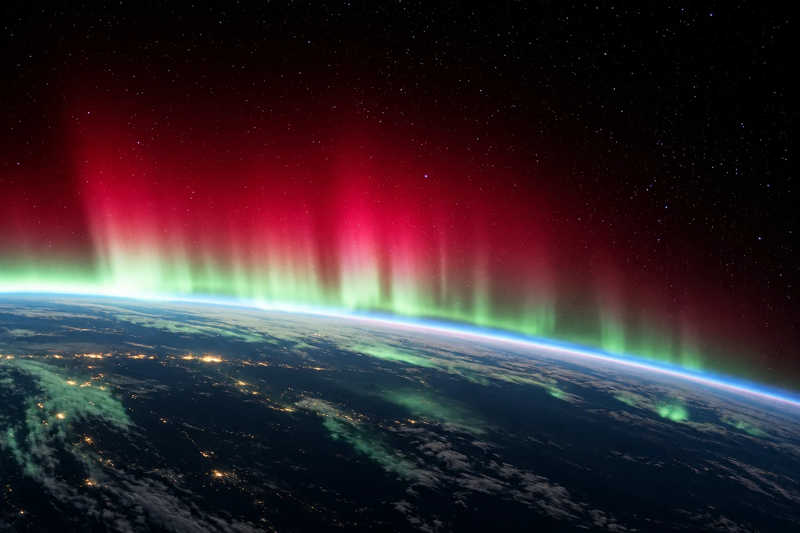
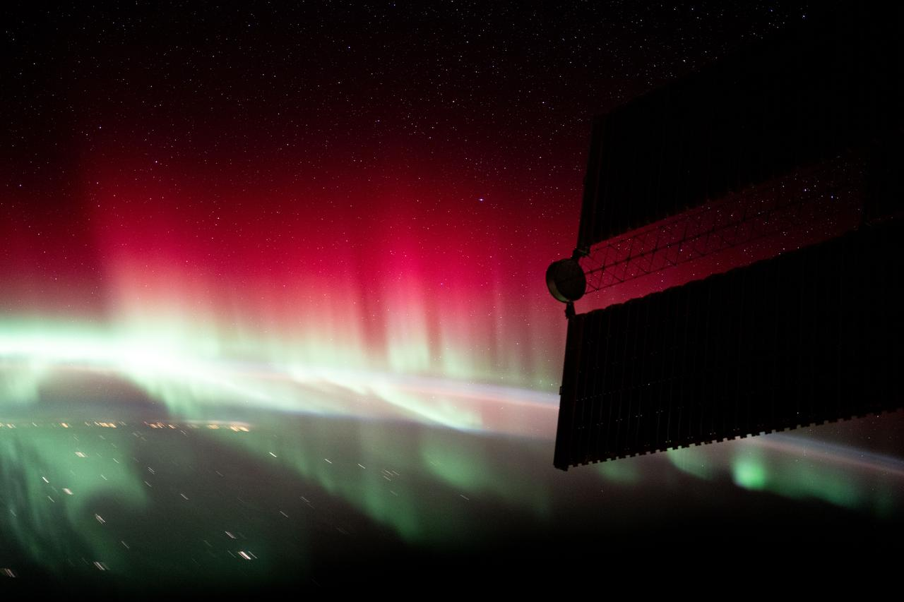

Una luce che appartiene all’atmosfera
Una cortina luminosa può mutare lentamente oppure attraversare una trasformazione rapida. Il cielo sembra animarsi, ma non stiamo osservando una nebulosa galattica che si sposta sopra gli alberi. L’aurora è un fenomeno dell’alta atmosfera collegato all’ambiente magnetico della Terra e al trasferimento di energia.
La scena unisce scale diverse: processi sul Sole, plasma nello spazio vicino alla Terra, campi magnetici, particelle accelerate e transizioni di atomi e molecole. Per capirla non basta chiamarla «vento solare colorato». La luce che arriva ai nostri occhi è prodotta nell’atmosfera coinvolta.
Questa lezione riprende il Sole e gli spettri della macroarea Stelle, ma cambia il luogo della produzione luminosa. Le stesse parole — particella, energia, livello, — diventano strumenti per leggere una scena reale.
Sole e magnetosfera: un trasferimento articolato
Il vento solare è un flusso di plasma, distinto dalla luce solare che viaggia nel vuoto. Campo magnetico e condizioni del plasma influenzano l’interazione con la terrestre. Non ogni aumento dell’attività sul Sole produce lo stesso effetto osservabile nella stessa città.
La magnetosfera non è una barriera rigida e impermeabile. Processi di trasferimento energetico, riconnessione e accelerazione partecipano alla dinamica. Le particelle che producono l’aurora possono essere accelerate nell’ambiente magnetosferico: non immaginiamo tutte le particelle come una traiettoria rettilinea invariata dal Sole fino alla luce verde.
Il campo magnetico guida i moti di particelle cariche, ma il disegno di un semplice dipolo è una semplificazione. Vento solare e processi interni deformano la configurazione. La forma dell’ovale aurorale non coincide quindi con un cerchio rigido della stessa dimensione in ogni notte.
Una perturbazione solare non accende automaticamente un’aurora nello stesso modo e alla stessa ora in ogni luogo. Il vento solare interagisce con la magnetosfera; orientamento dei campi e trasferimento di energia contribuiscono alla risposta. La riconnessione magnetica è parte di questo quadro, non un filo luminoso che congiunge direttamente una macchia del Sole alla tua città. Anche nuvole, buio e posizione dell’ovale influenzano ciò che puoi vedere. Per leggere una previsione separa quindi tre domande: quale perturbazione è stata misurata, quale risposta è possibile e quali condizioni locali rendano osservabile il fenomeno.
Dall’energia delle particelle ai fotoni
Particelle energetiche, soprattutto elettroni per molte manifestazioni visibili, trasferiscono energia a specie atmosferiche attraverso collisioni. Atomi e molecole possono essere eccitati o ionizzati. Quando un sistema eccitato passa a un livello inferiore, può emettere un fotone caratteristico.
La distribuzione delle energie, la composizione atmosferica e le collisioni condizionano l’emissione. Non tutta l’energia diventa luce visibile e non tutto ciò che riceve la camera è percepito con la stessa intensità dall’occhio.
Le righe dell’ossigeno vicino a 557,7 nm e 630,0 nm contribuiscono rispettivamente a emissioni verdi e rosse. Azoto molecolare e suoi ioni contribuiscono ad altre bande e colori. Una fotografia a colori non è però uno spettro capace di separare automaticamente tutti i contributi.
L’aurora dall’ISS: riconoscere quota e proiezione

Ritrova la fotografia commentata e i suoi riferimenti ↑
Individua il bordo terrestre, la regione verde e il contributo rosso più in alto nella scena proiettata. Il pannello della stazione è un oggetto vicino, non una parte della struttura aurorale. La fotografia contiene una geometria orbitale da tenere distinta dalla vista sotto la cortina.
Il percorso della luce lungo il bordo può amplificare il contributo di strutture estese. Dal colore di un pixel non ricaviamo una quota esatta o un’energia delle particelle. La fonte stabilisce il contesto, mentre spettro, geometria e ulteriori misure permettono analisi più specifiche.
Il rosso sopra il verde significa due gas completamente separati?
Non necessariamente. L’ossigeno può contribuire a entrambe le emissioni attraverso stati differenti. Densità, energia delle particelle e competizione con collisioni non radiative modificano quali transizioni si rendono evidenti.
Emettere luce prima di un’altra collisione
Uno stato eccitato non deve emettere immediatamente. Può perdere energia attraverso una transizione radiativa oppure attraverso interazioni che non producono quel fotone. Se la probabilità di collisione cresce, alcuni stati vengono depopolati prima dell’emissione: è il quenching collisionale.
Uno stato con emissione spontanea più lenta ha più tempo per subire una collisione. Questo aiuta a capire perché la distribuzione delle emissioni dipenda dalla densità e dalla quota. Non basta però dire «più in alto è più rosso» per misurare ogni aurora: processi e linee di vista sono più articolati.
Il modello seguente considera due livelli artificiali per isolare la competizione. Colori e tassi non devono essere letti come una misurazione completa dell’ossigeno nella fotografia. La domanda è generale: quale frazione di eccitazioni riesce a produrre il fotone prima di essere interrotta?
Laboratorio: una competizione fra tempi
Confronta le condizioni del gas nel modello e osserva quando un’emissione diventa più difficile. Non confondere il colore assegnato alla simulazione con una previsione locale.
Osserva, confronta, riconosci


Atmosfera, nubi e superficie partecipano allo scambio di luce ed energia.
NASA — Visible Earth; Reto Stöckli e team MODIS · Linee guida NASA.Particelle ed atmosfera trasformano energia in luce
Prima scegli un confronto. Poi osserva che cosa cambia e collega l’effetto alla spiegazione.
Il modello richiede JavaScript; il principio e le immagini restano leggibili.
Modello didattico originale AD ASTRA: semplificazioni dichiarate nella figura. Il movimento, quando disponibile, parte solo su richiesta.
Apri il confronto numerico precedente · facoltativo
Approfondimento numerico precedente · facoltativo
La relazione nel testo di approfondimento
P(emissione) = A/(A+C), tassi costanti concorrenti. Valori assegnati per dimostrare il principio, non parametri esatti delle righe aurorali. Esclusi densità, quota, cascata di livelli, tasso reale di eccitazione e geometria.
Con C = 0, entrambi gli stati emettono nel problema semplificato. Con C = 0,1 s⁻¹, lo stato rapido ha probabilità circa 91%, quello lento circa 9%. La differenza deriva dalla competizione temporale, non da una maggiore quantità di atomi verdi rispetto a rossi.
Nel caso reale, il numero di eccitazioni non è necessariamente uguale per gli stati. Per prevedere intensità e rapporti di righe servono dati atomici, condizioni atmosferiche e distribuzione delle particelle. Il laboratorio spiega una relazione, senza sostituire quella fisica completa.
Perché si osservano più spesso alle alte latitudini
La distribuzione magnetica favorisce ovali aurorali nelle regioni polari, con posizioni e dimensioni variabili. Durante eventi geomagnetici importanti, manifestazioni possono essere osservate a latitudini inferiori. Latitudine geografica e geomagnetica sono riferimenti differenti.
Un indice come Kp riassume parte dell’attività geomagnetica. Non è un comando che garantisce visibilità in un luogo. Nuvole, luce, orizzonte, orario e struttura dell’evento intervengono; una camera può registrare contributi deboli che l’occhio riconosce soltanto come chiarore.
Per una verifica attuale consulta prodotti primari aggiornati, conservando istante e ambito della previsione. Una foto del 2025 non certifica le condizioni di oggi. La pagina NOAA è un riferimento scientifico; il laboratorio della lezione non acquisisce dati di space weather in tempo reale.
Aurora, airglow e chiarore artificiale
L’atmosfera può emettere anche attraverso processi che non corrispondono a una specifica aurora. Airglow descrive emissioni atmosferiche diffuse con altri meccanismi e condizioni. Condividere una riga o un colore non rende identici tutti i fenomeni.
Bagliori artificiali e nubi illuminate possono simulare alcuni aspetti in una foto. Colore, movimento, direzione e confronto con dati indipendenti aiutano, ma non ogni immagine rossastra verso nord è un’aurora dimostrata. Conserva file originali e condizioni di ripresa.
Il sensore accumula luce per un tempo scelto; bilanciamento e trattamento cambiano la resa. Una fotografia intensa non impone che l’osservatore abbia visto gli stessi colori con la stessa saturazione. Il valore della ripresa resta, purché descritta come dato fotografico.
Leggere la scena senza fermarsi al colore
Prepara una scheda con luogo, ora, direzione, durata, descrizione visuale e impostazioni della camera. Confronta la scena con prodotti primari e indica se l’identificazione resta dubbia. Separare osservazione visuale e ripresa evita che l’una riscriva il ricordo dell’altra.
Spiega poi perché una specie può contribuire a due colori e perché un tasso collisionale maggiore penalizza maggiormente uno stato lento nel modello. È il collegamento fra una scena evocativa e una spiegazione fisica verificabile: la luce acquista una storia, oltre al suo fascino.
La sorpresa di un’aurora rimane anche quando sappiamo da dove cominciare a spiegarla. Per cercarla davvero servono informazioni aggiornate, un luogo adatto e aspettative prudenti.
Fonti e approfondimenti
Testo e schemi originali AD ASTRA. Le fonti indicate sono riferimenti dei concetti trattati; i modelli sono didattici e dichiarano i propri limiti.